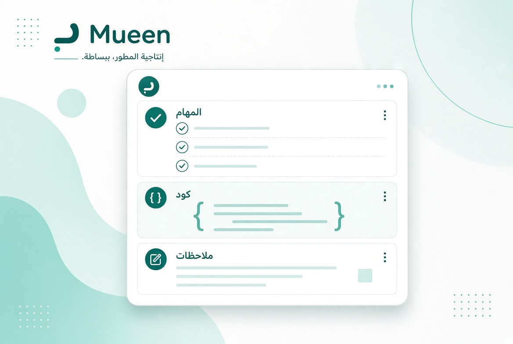

المهام المفتوحة0
مُعين
مساحة المبرمج العربي
مرحبًا بك في مُعين
أنجز العمل، احفظ الكود، وابدأ من قالب جاهز — من مكان واحد.
اليوم
--

الفكرة ببساطة
ثلاث أدوات تعمل معًا: مهامك، مكتبتك البرمجية، وملاحظاتك — مربوطة بمشاريعك.
جاهز للإنجاز
ماذا ستنجز اليوم؟
ابدأ بمهمة صغيرة، وسجّل تقدمك خطوة بخطوة.
لوحة اليوم
ما الذي يستحق وقتك الآن؟
نظرة سريعة
مساحتك اليوم
قصاصات الكود0
الملاحظات0
أيام متتالية0
اختصارات
ابدأ بسرعة
التنظيم
المهام اليومية
تابع ما تريد إنجازه اليوم، أو ابدأ جلسة تركيز على مهمة.
مكتبتك البرمجية
قصاصات الكود
احفظ أكوادك، ثبّتها، واربطها بمشروع.
صندوق الأدوات
أدوات برمجية
أدوات يومية واضحة، بدون تعقيد.
أفكارك وملاحظاتك
الملاحظات
اربط الفكرة بالمشروع كي لا تضيع.